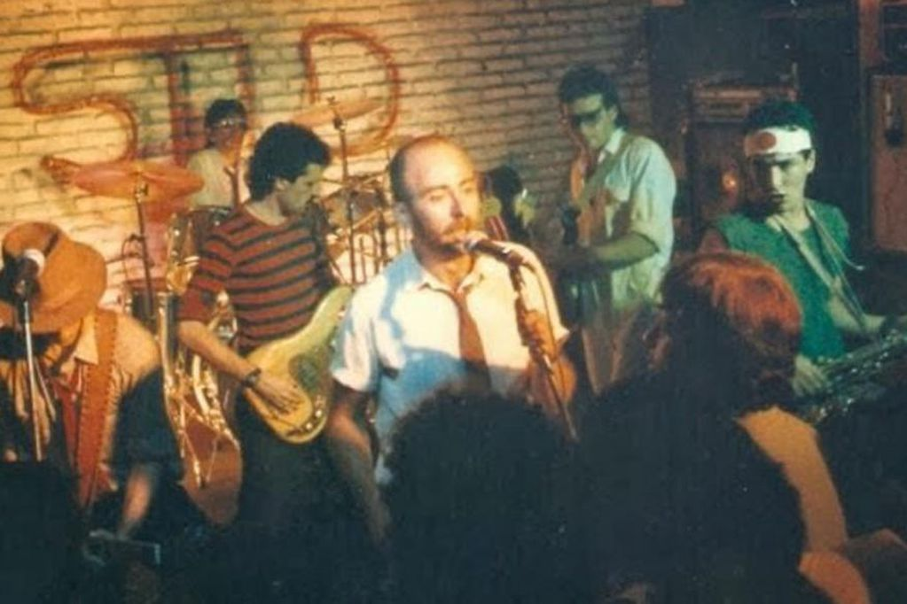
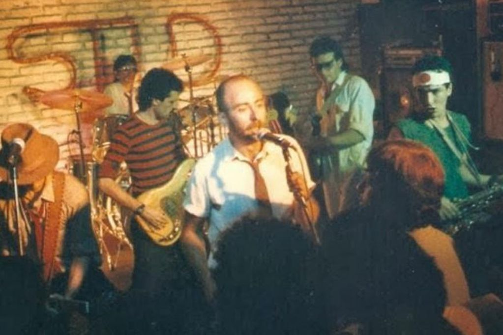

En 1987 quedó conformada lo que es la formación de la banda estable hasta el día de su separación: El Indio Solari, Skay Beilinson, Semilla Bucciarelli, Wálter Sidotti y Sergio Dawi, con La Negra Poly (manager) y Rocambole (arte de los discos). El 2 de diciembre de 1989 llegó su consagración en el templo del rock, el Estadio Obras Sanitarias, colmando su capacidad (4700 personas) en dos ocasiones y haciendo una tercera función al aire libre agotando las 25.000 localidades. En 1998 se sumó definitivamente a la formación estable Hernán Aramberri (programador), quien venía trabajando con la banda desde 1993. Ese mismo año salió a la venta Último bondi a Finisterre, un álbum que representa un giro musical en la carrera de los Redonditos, pasando a un estilo de rock electrónico gracias a la incorporación de sonidos digitales y samplers. Este material fue presentado las noches del 18 y 19 de diciembre en el estadio de Racing Club de Avellaneda, con 60.000 espectadores en cada noche. El show del día 19 fue otro de los más emblemáticos en la carrera de la banda, y también quedó registrado en un material fílmico que la banda guardó durante años, hasta que se reveló al público en 2010. En abril de 2000 realizaron dos recitales en el estadio de River Plate, la asistencia al evento fue de más de 70.000 espectadores cada noche. El 2 de noviembre de 2001 se oficializó la separación. Se cerraba así, tras veinticuatro años de carrera, la historia de una de las bandas más grandes de la historia de la música argentina.
 
